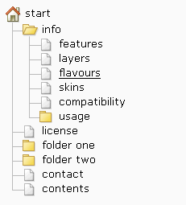
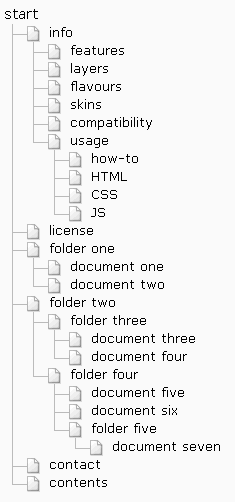
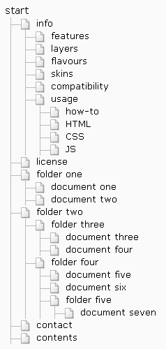
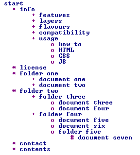
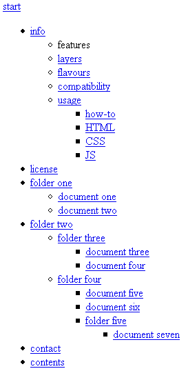

Flavours
To accomodate for different uses, the Nornix tree menu CSS classes can be inserted either client-side (thru JavaScript) or server-side (using PHP, Perl, Python, Ruby ...). How this is done affects how the menu will look when JavaScript is disabled.
There are also browsers that are not able to show pages with a graphic style. In this case it is important to use a good structure in the (X)HTML markup, which the tree menu does. See more information on special cases at the end of this page!
Server-side och client-side?
There’s two disadvantages when using the client-side approach:
- The rendering of the menu is a little bit slower.
- The menu will not look as nice when JavaScript is disabled.
The reason to still use the dynamic client-side option is when you can not use server-side scripts/programs, or where you know the audience very well (as in an intranet), and know that JavaScript will be enabled.
What will happen?
This is how the server-side flavour will look whithout JavaScript:

This is how the client-side flavour will look without JavaScript, as long as there is no whitespace in some places in the HTML markup:

This is how the client-side flavour will look without JavaScript, when there is whitespace in some places in the HTML markup (the whitespace can make the last-child pseudoclass useless in some browsers, like Firefox):

Menu rendering in special cases
Menu rendering in text-only browsers
The tree menu will render as it should in text-only browsers too. This is a screenshot of Lynx:

The menu is still perfectly accessible and usable.
Rendering in older, non-compliant browsers
If you need to accomodate for really old browsers (released before 2001), read about @import hacks on the how-to page.
When using @import hacks, the modern visual experience is hidden from old browsers like Netscape Navigator 4.x. Such browsers can't recognize the visual effects used nowadays, but will still render a menu that works in this case:
